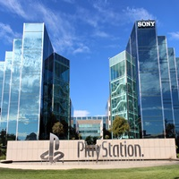
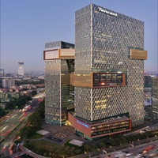
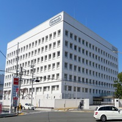

Sony Interactive Entertainment LLC (SIE) is a video game and digital entertainment company, subsidiary of Sony Group Corporation. It is headquartered in San Mateo, California and primarily operates the PlayStation brand of video game consoles and products.
It is also the world's largest company in the video game industry based on its equity investments.
In 1993, Sony and Sony Music Entertainment Japan jointly established Sony Computer Entertainment Inc.
(SCE) in Tokyo, which released the video game console PlayStation in Japan the following year and subsequently
in the United States and Europe the year after. It founded the branches Sony Computer Entertainment America (SCEA)
in May 1995 (in Foster City, California) and Sony Computer Entertainment Europe (SCEE) in July 1995 (in Liverpool).

Tencent Holdings Ltd. (Chinese: 腾讯; pinyin: Téngxùn) is a Chinese multinational technology conglomerate and
holding company headquartered in Shenzhen. It is one of the highest grossing multimedia companies in the world
based on revenue. It is also the world's largest company in the video game industry based on its equity investments.
Founded in 1998, its subsidiaries globally market various Internet-related services and products, including in entertainment,
artificial intelligence, and other technology.
Microsoft Gaming is an American multinational video game and digital entertainment division of Microsoft based in Redmond,
Washington established in 2022. Its five development and publishing labels consist of: Xbox Game Studios,
Bethesda Softworks (publisher of ZeniMax Media), Activision, Blizzard Entertainment, and King (aforementioned are
publishers of Activision Blizzard).[2] It produces the Xbox video game consoles and services, in addition to overseeing
production and sales, and is led by CEO Phil Spencer, who has overseen Xbox since 2014.

Nintendo Co., Ltd.[b] is a Japanese multinational video game company headquartered in Kyoto.
It develops, publishes and releases both video games and video game consoles.
Nintendo was founded in 1889 as Nintendo Koppai[c] by craftsman Fusajiro Yamauchi and originally
produced handmade hanafuda playing cards. After venturing into various lines of business during the 1960s
and acquiring a legal status as a public company, Nintendo distributed its first console, the Color TV-Game,
in 1977. It gained international recognition with the release of Donkey Kong in 1981 and the Nintendo Entertainment
System and Super Mario Bros. in 1985.